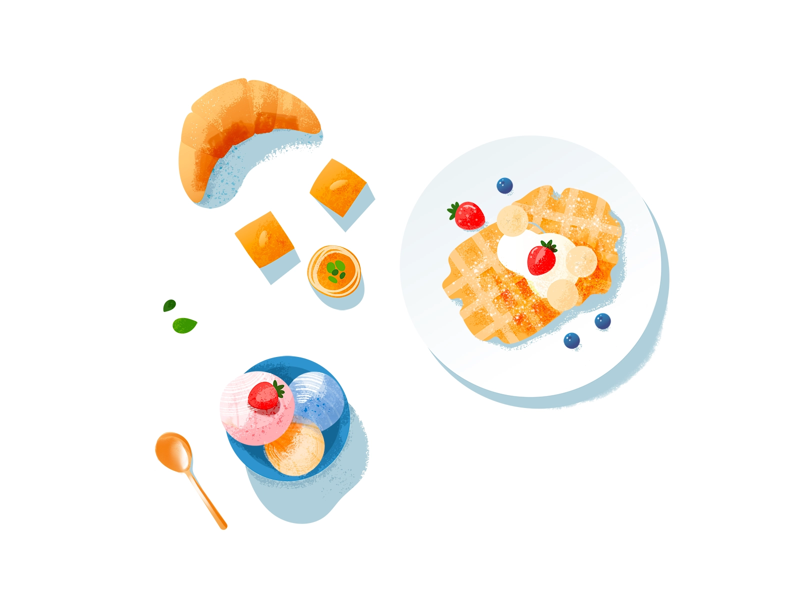

Food Bucket List
맛있는 음식 먹기
맛있는 음식을 먹는 일은 나의 일상에 큰 즐거움을 선사한다. 나는 행복하고 싶다. 그래서 일상 속 행복에 높은 순위를 차지하는 미식을 위하여 최근 먹고 싶은 음식 목록을 3가지로 만들어보기로 했다.
첫번째로 떡볶이는 나의 소울 푸드, 언제나 먹어도 싫지 않다. 랍스타는 지인에게 이야기를 우연히 듣고 먹어 보고 싶다는 호기심이 발동해서 리스트에 올랐다. 마지막 세번째 구운 고기라 함은 마지막으로 먹은게 언제인지 잘 기억나지 않을 정도인데, 요즘 음식을 클린하고 가볍게 먹다보니 때때로 든든하게 배를 채워 기운을 보강하고 싶은 욕구의 결과이다.